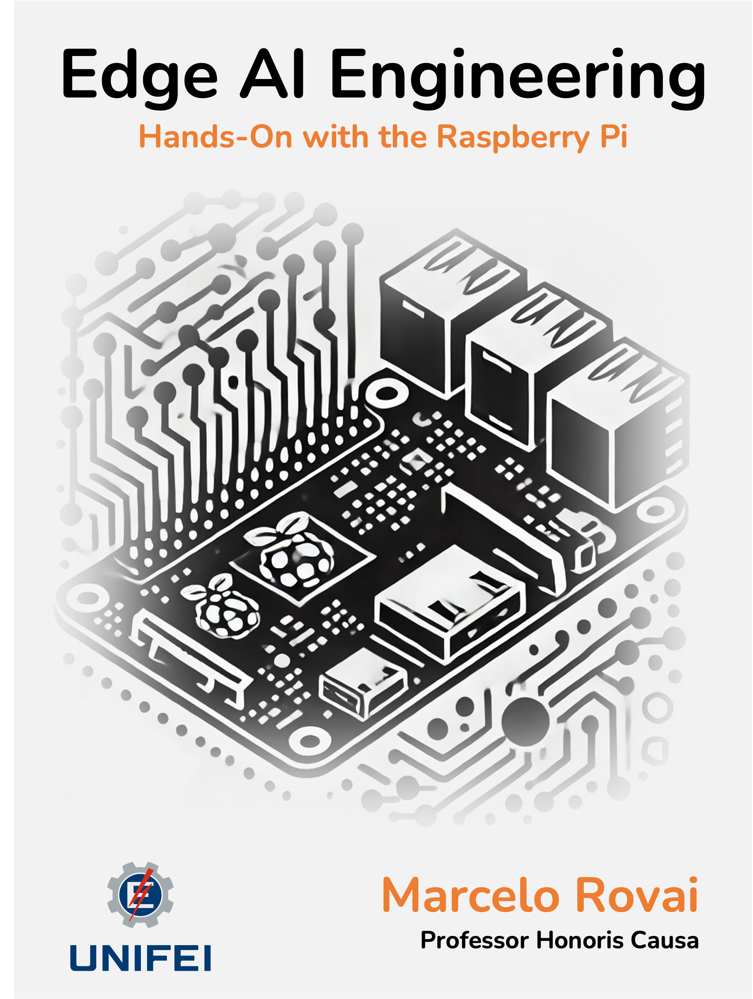

Edge AI Engineering
Hands-on with the Raspberry Pi
Preface

In the rapidly evolving landscape of technology, the convergence of artificial intelligence and edge computing stands as one of the most exciting frontiers. This intersection promises to revolutionize how we interact with the world around us, bringing intelligence and decision-making capabilities directly to the devices we use every day. At the heart of this revolution lies the Raspberry Pi, a powerful yet accessible single-board computer (SBC) that has democratized computing and now stands poised to do the same for edge AI.
This book, which serves as the official textbook for IESTI05 Edge AI Engineering at the Federal University of Itajubá (UNIFEI) in Brazil, represents both a passion for technology and a belief in its power to solve real-world problems. While developed to support UNIFEI’s engineering curriculum, the content is designed to be valuable for all learners, whether in academic settings or pursuing independent study.
“Edge AI Engineering: Hands-on with the Raspberry Pi” is not just about theory or abstract concepts. It’s about getting your hands dirty, writing code, training models, and seeing your creations come to life. Each chapter blends foundational knowledge with practical application, focusing on what’s possible with the Raspberry Pi platform.
From the compact Raspberry Pi Zero to the more powerful Pi 5, we explore how these incredible devices can become the brains of intelligent systems—recognizing images, understanding speech, detecting objects, and even running small language models. Each project serves as a stepping stone, building your skills and confidence as you progress.
Beyond the technical skills, this book aims to instill something more valuable – a sense of curiosity and possibility. The field of edge AI is still in its infancy, with new applications and techniques emerging daily. By mastering the fundamentals presented here, you’ll be well-equipped to explore these frontiers, perhaps even pushing the boundaries of what’s possible on edge devices.
Whether you’re a student seeking to understand AI’s practical applications, a professional expanding your skill set, or an enthusiast eager to add intelligence to your projects, we hope this book serves as both a guide and an inspiration.
As you embark on this journey, remember that every expert was once a beginner. The learning path is filled with challenges and moments of joy and discovery. Embrace both, and let your creativity guide you.
Thank you for joining us on this exciting adventure into edge machine learning. Let’s begin exploring what’s possible when we bring AI to the edge, one Raspberry Pi at a time.
Happy coding, and may your models always converge!
Prof. Marcelo Rovai Federal University of Itajubá, Brazil April, 2025